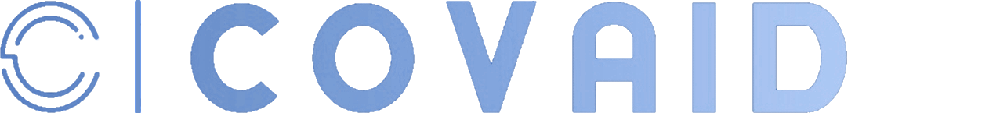

<footer class="footer-container">
  <div class="footer-first-container">
    
    <div style="position: relative; top: 30px">
      CovAid România, unul dintre cei mai importanți furnizori internaționali de
      servicii medicale și de diagnostic. Fondat în anul 2020 ca răspuns la
      cererea din ce în ce mai mare pentru servicii medicale de calitate, CovAid
      s-a extins ulterior în alte țări, pentru a acoperi nevoi similare. Astăzi,
      cea mai mare parte a activităţii CovAid se desfășoară în marile orașe din
      România. CovAid oferă prin intermediul celor două divizii ale sale –
      Servicii Medicale și Servicii Diagnostic – o paletă largă de servicii
      medicale printr-o rețea extinsă de clinici, spitale, laboratoare
      specializate și centre de recoltare de probe biologice.

      <div style="font-family: OgonekBold">
        <mat-icon class="icons"> location_on</mat-icon>
        Bulevardul Vasile Pârvan 4, Timișoara 300223
      </div>
      <div style="font-family: OgonekBold">
        <mat-icon class="icons"> phone</mat-icon> +40 256 592 111
      </div>

      <div style="font-family: OgonekBold">
        <mat-icon class="icons"> email</mat-icon>
        andreea.pupe99@e-uvt.ro
      </div>
    </div>
  </div>

  <div class="footer-second-container">
    <div style="position: relative; left: 100px">
      <div style="font-family: OgonekBold; position: relative; right: 130px">
        Link-uri utile
      </div>
      <mat-list role="list">
        <mat-list-item role="listitem"
          ><button
            mat-button
            class="footer-menu-buttons"
            [routerLink]="['/patient/dashboard']"
            routerLinkActive="router-link-active"
          >
            <span>Dashboard Patient</span>
          </button></mat-list-item
        >

        <mat-list-item>
          <button
            mat-button
            class="footer-menu-buttons"
            [routerLink]="['/patient/appointments']"
            routerLinkActive="router-link-active"
          >
            <span>Programările mele</span>
          </button>
        </mat-list-item>
      </mat-list>
    </div>
  </div>
  <div class="footer-third-container">
    <app-footer-map></app-footer-map>
  </div>
</footer>
<div
  style="
    width: 1440px;
    height: 15px;
    background-color: rgb(179, 198, 248);
    position: relative;
    bottom: 730px;
  "
></div>
